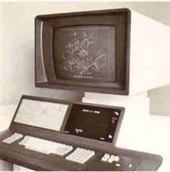
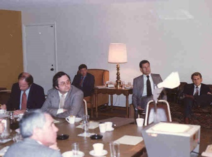
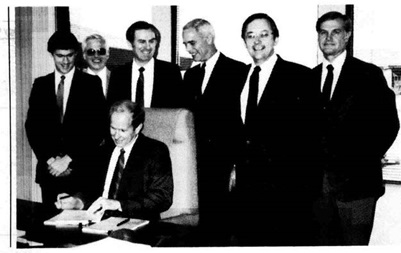

第9章：Auto-trol技术
作者注：我于1980年1月加入Auto-trol Technology，最初担任产品规划主任。接下来的几年里，我先后担任产品营销主任、AEC 应用开发主任和市场支持主任，其中我的主要职责是竞争分析。 1985年末，我开始创立一个政府销售组织，这项任务持续到1990年末。在我的最后一年工作期间，我负责AEC和技术出版业务单元。因此，本章的大部分内容基于我个人在Auto-trol Technology的经历。
Auto-trol Technology公司的演变
Auto-trol Technology公司由Bill Barnes和他的妻子Tammy于1962年创立，我曾在1960年与他们一同在科罗拉多州公路局工作。Bill是一位极具创造力的工程师，总是能想出新产品和市场的新点子，其中有些实际有用，有些则不然。公司的名字来自“自动控制”。其初期重点是在建立工业控制系统，包括烘培设备的控制设备。
然而，不久之后，Auto-trol开始建造用于土木工程、制图和电子设计应用的大型精密数字化器。这些数字化器大约有绘图板的大小，并使用光学技术追踪游标位置。在20世纪60年代，我偶尔会在贸易展会上遇见Tammy，公司会在展台上展示数字化器。大约在1970年，Auto-trol开始将其数字化器直接接口到小型计算机系统上，就像Calma在第11章中描述的那样。
在这些早期年份中，Auto-trol的收入从未超过一百万美元，在1971或1972年，Barnes将公司出售给了Electronic Assistance Corporation（随后更名为EAC Industries）。 1973年5月，Howard Hillman购买了该公司的控股权。EAC宽恕了其对Auto-trol所做的所有贷款，除了在1973年后还款的150,000美元外，EAC还收到了2,000股A系列优先股和15,000股B类普通股。Hillman以50,000美元购买了200万股普通股，并同意借给公司额外的资金来运营和扩张。
Howard Hillman的财富源自其父约翰·希尔曼早在20世纪初在匹兹堡成立的一个大型工业帝国。Howard的母亲Dora与John Hillman结婚，John后来通过正式收养Dora早前婚姻中的孩子Howard和他的兄弟Tatnall。John Hillman于1959年去世，他还有一个儿子来自第一段婚姻，Henry比Howard大几岁，长期经营着家族企业The Hillman Company。 Hillman Company最初从事重工业商品，如焦炭和铁矿石，包括匹兹堡焦化和化学公司，但自Henry接手以来，公司更多地涉足房地产开发和投资，例如第一家成功的生物技术公司Genentech。
Dora Hillman于1970年设立了Howard B. Hillman信托基金，为Howard及其家族提供资金。该信托基金曾经十分有价值，Howard曾被福布斯杂志列为美国400位最富有的人之一，净资产超过6亿美元。虽然Henry于2002年卸任希尔曼公司的董事长，但他仍然上榜（2006年排名第68位，净资产28亿美元），而Howard和Tatnall（拥有类似的信托基金）现在不再上榜，这可能非常符合Howard Hillman的心意。Howard B. Hillman Trust在多年中提供了用于资助Auto-trol的大部分资金。如果没有Hillman和信托基金的不断注资，该公司在20世纪90年代初甚至更早就可能破产。
多年来，这个最初的5万美元投资看起来是电脑行业历史上最杰出的投资之一。1979年Auto-trol以每股14美元的价格上市时，希尔曼的投资价值已达2800万美元。1980年第三季度，股价达到每股61.50美元的高峰，使这笔5万美元的投资价值达到1.23亿美元，并且希尔曼此前对该公司的所有贷款都已偿还。从那时起，一切都走下坡路。在接下来的20年中，霍华德投资了超过1亿美元在该公司中。这些资金大部分最初是提供为贷款，后来转换为股权。2002年1月，公司宣布以低于1200万美元的价格私有化，这样价值希尔曼在该公司的投资。
当公司在1979年上市时，名称改为Auto-trol Technology。事实证明，威斯康辛州还有一家名为Autotrol的公司，其制造废物处理设备。在1980年代后期的某个时候，这家其他公司实际上成为Auto-trol Technology的客户。
Auto-trol早期CAD系统的开发
霍华德收购Auto-trol时，由John Dzien经营该公司。丹·麦克尼尔负责销售，劳·科恩担任市场支持经理，彼得·斯卡茨负责软件开发。 Auto-trol开发的第一个交互式图形系统是Auto-Draft，可追溯至1973年。 （尽管公司的IPO招股说明书称为1970年，但我认为该公司早期的系统不支持绘图功能，而基本上是计算机控制的数字化系统。） Auto-Draft开发为AEC和机械制图系统，与当时针对集成电路制作和工程设计的相似系统的Calma和Applicon不同。第一个Auto-Draft系统安装在加拿大的Alcan（Alcoa的子公司）设施中。其他早期的Auto-Draft客户包括Exxon，Phillips Petroleum，Allied Chemical和Sylvania。
汽车管控选择Tektronix存储管技术作为该系统图形部分并不意外。这个新的行业几乎每个人都在使用Tektronix终端。然而，有些令人惊讶的是选择Varian数据机器提供这些系统所围绕的微型计算机。Auto-Draft系统使用Varian的620/L计算机。典型的四人工作站系统售价为25万美元。为了让这个时期的一些价格有所体现，5MB的硬盘售价为16,900美元，40英寸×60英寸平板绘图仪售价为39,600美元，而Tektronix 4014终端售价为21,000美元。该软件售价为13,650美元。
大多数早期系统都用于生产绘图。例如，菲利浦石油公司的系统用于准备流程图、电气图、印刷电路板布局、装配图和透视图。菲利浦声称使用此系统可以获得3:1的生产力提高。车管控销售人员往往强调生产力增益，尽管有时会有所夸张。我已经看到过公司声称可以预期10:1的生产力增长的文件。虽然这可能适用于某些高度重复的图纸，但不太可能在广泛的工作范围内实现这样的增长。
唐纳德·史密斯于1974年成为车管控的总裁，几年后他聘请吉姆·斯塔恩斯担任市场营销高级副总裁。 1976年，Sperry Rand的Sperry Univac分部收购了Varian数据机器。大约在同一时间，Auto-trol开始开发一种名为AD/380的新CAD系统，该系统使用Sperry的V76和V77微型计算机。据我所知，第一个AD/380系统于1977年出货。在下面所描述的CC-80推出之前，除了图形终端外，几乎所有终端都是标准的Tektronix 4014设备。
AD/380被设计为支持最多12个用户工作站，实际上，该公司在1979年初已经安装了几个9或10个4014设备的系统。Auto-trol使用了一个相对标准的VORTEX（V77 Omnitask实时执行程序）操作系统，该系统提供有效的多任务处理和动态内存管理能力。因此，每个工作站可以在需要时利用不同的软件应用程序。 AD/380的关键功能之一是它可以同时在运行交互式图形软件时在后台运行批处理程序。 V77系统可以支持最多1兆字节的主存储器和各种磁盘驱动器，包括由控制数据公司制造的300MB可拆卸磁盘套装单元。在1980年初，使用的标准计算机是V77-600。不断给公司带来麻烦的一个问题是该机器具有一个可选的浮点处理器，该处理器使用与系统浮点软件子程序不同的数据格式。
加入公司时，Auto-trol已有169个客户，拥有大约225个AD / 380和Auto-Draft系统的安装基础。这可能达到了1,000个用户工作站。一个typical的四工作站系统售价约为38万美元。这可能不包括高端绘图仪的费用，其可以使系统的价格增加40,000到50,000美元。
1976年，Auto-trol还开始开发一种名为CC-80的新图形工作站。它使用19英寸 的Tektronix 619 存储管显示器，支持有限的刷新功能和标准的存储管显示器功能。 CC-80集成了德州仪器TI-8800微处理器，该处理器从AD / 380小型计算机中卸载了许多显示任务。参见图9.1。
CC-80是Auto-trol曾经制造的最好的产品之一。其设计考虑了相当多的人因素工程。由于当时的CAD系统是为全职操作员设计的，因此该设备内置了电动高度和倾斜调整等功能。如果与数字化绘图板一起使用，屏幕可以被抬高，操作员正在站立，或者可以为高或矮的坐姿操作员定位。
CC-80还包括一个大桌子，可将图纸摊开，带有可显示消息的字母数字显示屏，而不会干扰存储管监视器上显示的图形，并带有一个由压力敏感的按钮组成的240按钮控制板ACTEC。这些按钮可以编程，通常启动特定于应用程序的功能。公司为其不同的应用程序提供塑料覆盖板。在需要时可以安装第二个可选的240个按钮面板。还有一个典型的键盘和一个摇杆光标控制装置。 Auto-trol在1979年5月开始运送CC-80，并在1980年初交付了225个单位。 CC-80售价为35,000美元到40,000美元。

Auto-trol 公司制造的其他产品中，包括 OPTEC 系列数码化板。这些产品起源于公司自上世纪60年代以来一直在生产的原始产品。OPTEC 数码化板具有各种不同的尺寸和分辨率，并有和不带背光的不同型号。其中有一种版本使用门式臂固定光标，而另一种则是自由光标版。另外一个产品是 Mark 4 平板绘图仪，这是一台巨型机器。它的结构坚固耐用，就像一门战列舰的火炮架，公司内部还开玩笑说它的门式架可以供人坐骑。它足够大，可以同时绘制两份E尺寸的图纸。相比之下，OPTEC 数码化板给公司造成的问题要比 Mark 4 小得多。这台绘图仪的笔架水平和垂直定位都是由金属带驱动的，这些带经常会断裂，而且在现场更换和校准都非常困难。公司为修理这些设备耗费的资源比例远高于其他产品。
总的来说，AD/380和CC-80都是出色的硬件产品。然而，存在一些问题。从工程和支持的角度来看，最严重的问题是每个AD/380系统都是定制的。Auto-trol从Sperry购买了基础计算机，并为每个配置添加了大量自己的硬件。系统的线包给后面板的设计基于连接到该系统的特定外围设备。结果是需要几周时间来检查新系统，并且每个系统都必须有专门为该配置生成的操作和应用软件。
当Auto-trol发布新软件版本时，不能仅将其复制并发送给维护的所有客户。相反，公司必须为每台机器执行SYSGEN（系统生成）操作，并向每个用户分发定制版本的软件代码。这意味着保持准确的记录描述每台安装的机器，这几乎是不可能的任务。大多数竞争对手通过使用标准化的计算机配置数年以前已经消除了这个需要。
Auto-trol在提供基础培训方面也与其大多数竞争对手不同。客户实际上会使用为其公司组装的特定系统进行学习。直到公司使用了更标准化的系统，这似乎一直运行得很好。当公司每个座位支付125,000美元的CAD系统时，他们非常愿意将操作员发送到丹佛接受两周或更长时间的培训。
Auto-trol软件截至1980年
1979年初，Auto-trol公司提供了两款软件产品，GS-100和GS-200。GS-100是在AD/380系统上实施的最初的Auto-Draft软件的扩展版本，而GS-200则是该公司创建机械设计解决方案的初步尝试。如果AD/380系统具有两套软件，则称为GS-300。虽然GS-100是一款非常好的生产绘图软件包，但GS-200还没有准备好。在公司在测试站点安装了几个副本后，很明显Auto-trol已经咬了比它咀嚼的更多。
1979年6月，Auto-trol与制造和咨询服务签订了一项软件许可协议，使用AD-2000作为新的机械设计解决方案的基础，称为GS-2000。请参见第15章。与此同时，GS-100更名为GS-1000，组合解决方案为GS-3000。第一个GS-2000的安装是在我于1980年初加入公司的同时进行的。
GS-1000可能是当时市场上最具生产力的AEC绘图解决方案。225个系统的安装基础中有50％以上位于石油化工和建筑工程设计市场空间中。公司销售组织专门针对大型石油化工用户。该软件具有竞争系统上典型的几何创建和编辑功能的组合。
GS-1000使用命令语言确定用户操作。例如，“R”代表矩形，“CC”代表圆形。每个命令都有多个选项。例如，使用圆形命令时，用户需要告诉软件如何定义圆形（中心和半径，三个点等），圆形要使用哪种线型，以及如何定义坐标值（键入或屏幕选择）。一旦定义了命令选项，系统将使用该信息，直到操作员输入更改。一些命令（如尺寸）非常广泛，具有多达十几个选项。
一个复杂的命令或一系列命令可以制作成一个名为“快速操作”的宏，分配到ACTEC面板上的按钮或数位板菜单上的按钮。虽然用户需要花费长达六个月的时间来熟悉这种命令语言，但一旦熟练掌握后，就会变得极为高效。当你看到公司最好的应用工程师进行演示时，你会看到他们的手指在键盘上如同模糊的光影。
GS-1000支持256个数据层，这是一项与M＆S计算（Intergraph）相比的竞争优势，因为该公司的软件只支持64个层次。
该软件还能够出色地插入十字线图案。GS-1000配备了一大套这样的图案。几年后，当Autodesk推出AutoCAD时，该软件的十字线图案集与Auto-trol多年来提供的几乎完全相同。公司还提供了相当广泛的应用程序特定符号集。
真正区分GS-1000与竞争对手的是快速操作宏功能。命令语言系统相对于纯菜单式系统的优势之一是可以更容易地实现强大的宏功能，而无需让它成为一种单独的语言。GS-1000 Quick Action或QA可以是一个简单的命令，也可以包含数百甚至数千个步骤，从而创建整个图纸。一位客户创建了一个复杂的QA，根据操作员输入的数据，该QA可以设计整个轧钢厂。 QAs的两个重要方面是它们可以暂停等待操作员输入，并且它们可以嵌套，就像软件子程序一样。快速操作是开发行业特定应用程序的关键工具。
GS-1000是一款强大的制图工具，是Auto-trol引以为傲的产品，但该公司在行业特定应用方面相当薄弱。有一些应用于流程装置管道设计和电气原理图，还有一个有限的建筑平面图套餐和一些地图软件。Auto-trol取得良好进展的一个领域是创建一个技术插图包，最初被称为ATIPS。这是公司在25年中一直表现强势的一个市场细分，并且这是公司仍然支持的少数制图特定应用程序之一。
早在1980年代初的产品开发
Auto-trol从1975年的140万美元的营收增长到1980年的5080万美元。基本的AEC制图产品很坚实，公司足够赚钱，可以有钱开发一个可行的机械产品线，如果智慧地进行开发。一年前，公司公开上市，自那以后，股票价格已经翻了一倍以上。Don Smith担任总裁以日常运营公司，而Hillman每隔几个月就从康涅狄格州的家里前往丹佛。
几年前，Smith聘请Jim Starnes负责公司的销售和营销工作。1979年，Starnes开始了一项相当明显的活动，试图取代Smith成为总裁。Starnes认为，公司需要更积极地开发光栅显示功能，并进入更先进的应用领域，如机械和电子设计。他悄悄地开始调动内部支持，以成为总裁。就在我加入公司之前，Starnes向Hillman做出了他的建议，Hillman建议Smith解雇他，他也确实被解雇了。Starnes继而在科罗拉多州博尔德市创立Graftek公司，并带走了一些Auto-trol的员工，如第21章所述。
Mike McGarr在1979年末从瓦里安公司被聘为内部运营执行副总裁。1980年初，史密斯聘请格雷厄姆·金为外勤运营执行副总裁，填补了斯塔恩斯被解雇后留下的空缺。格雷厄姆·金的兄弟鲍勃·金是公司的董事会成员。从表面看，这似乎是一个不错的举措，因为金在IBM拥有15年的重要销售管理经验。回顾起来，它为CAD/CAM行业中本可以成为占主导地位的公司的逐步瓦解奠定了基础。
正如下文所述，影响Auto-trol的一个重要因素是IBM前销售和营销经理的涌入——约翰·罗杰斯、吉姆·哈莫克、吉恩·巴杜森、乔·齐姆克等等。甚至唐·史密斯也曾在IBM工作过。一些领域内的销售经理，包括吉姆·诺罗德和戴夫·汉纳，也是从IBM被聘用进来的。他们都是优秀、聪明的人。问题是，他们认为销售和营销可以克服公司可能存在的任何产品缺陷。这是电脑行业末期的时代之一，人们常说：“在任何一天里，IBM都可以与UNIVAC交换产品系列，一年后，IBM将重新回到领先位置。”
这种对销售和营销的关注带来的副产品之一，特别是对销售的关注，是新产品开发没有得到所需资源。也许最大的问题是，公司过度关注了其业务的制造方面。实际上，在我开始工作几天之后，唐·史密斯毫不含糊地告诉我：“记住，这是一家制造公司。”直到1980年，这可能是有道理的。内部制造产品产生的利润有助于资助当时正在进行的软件开发。软件实际上是一种帮助销售更多硬件的机制。
Auto-trol于1980年1月在亚利桑那州斯科茨代尔举行的会议。

从左下方开始顺时针方向：Mike McGarr、Bob McFarland、Dave Weisberg、Graham King、Don Smith、Art Minich（注意尽管这是周末，但仍需着商务着装）
V77-800计算机转型
1980年，Sperry Univac V77800微型计算机作为补充并最终替换V77-600，是Auto-trol公司一个相当复杂的项目。自至今的绝大部分AD/380系统都使用V77-600之后，第一台新设备于1980年6月初发货。从性能的角度来看，V77-800或许是有史以来最优秀的16位微型计算机之一。可惜的是，Auto-trol是唯一一个将这台机器用于CAD系统的公司，而公司在营销方面无法得到Sperry的支持。
虽然AD/380从一开始就设计支持多达12个工作站，但现实情况是，V77-600跑到六个以上就会对性能造成不利影响。V77-800提供了这样的能力，使公司能够销售更大型的系统。1980年6月，Auto-trol发货了几个价值超过每台$600,000的系统，还有一个售价超过$700,000的系统。
在Auto-trol正在引进V77-800的同时，公司意识到必须转向逐渐普及的32位微型计算机的新一代，以用于工程设计系统。1980年，该公司的一个重要活动是评估来自Sperry Univac、Digital Equipment、Data General、Systems Engineering Laboratories、Prime Computer和Interdata （Perkin Elmer）等公司提供的可用计算机系统。最终，公司决定采用Digital VAX产品线。
规划GS-1000的未来
同时进行的一个重大项目是确定GS-1000的未来。该软件包主要是为V77产品系列编写的汇编语言。公司一直在寻找一种将代码转换为FORTRAN的方法，而不必手动重写。Auto-trol苦苦思索了数个月的几个问题是，是否创建一个16位的V77 FORTRAN实现，还是集中开发一个32位版本，为公司选择的任何新计算机平台，以及新软件必须与现有GS-1000程序兼容的程度。
在后者领域，毫无疑问，新版本必须能够导入使用GS-1000创建的绘图文件。新文件是否必须向后兼容GS-1000是一个不同的问题。后者是更难完成的任务，公司并不知道这种能力对其现有客户来说有多重要。最终，Auto-trol决定使新软件向后兼容。这证明是一项艰巨的任务，后来几个关键用户告诉公司，这确实不需要做。但那时为时已晚。一个重要决策是新程序将能够执行现有的QA而不需要修改。这证明是一个明智的决定。
机械设计软件
1980年，Auto-trol的机械活动，特别是软件开发，处于动荡之中。最初的开发是在Ron McElheney的指导下完成的，他在短短几个月的时间内 hired了一个相当大的工作人员。虽然Auto-trol在1980年生产了几份GS-2000宣传册，但不清楚该软件在AD/380上的实际运行情况。公司早期宣传册中的大多数插图似乎是由MCS制作的标准AD-2000屏幕截图。
早在1980年初，麦克埃尔亨尼离开了公司，前往Graftek与吉姆·斯塔恩斯一起工作，并带走了几位GS-2000程序员。随后，开发小组由戴夫·卡斯特负责，汇报给阿特·明奇，后者已经取代艾德·弗拉布利克成为副总裁-软件科学。卡斯特手下有约15名员工，其中大多数人之前都没有使用过三维机械设计软件。实际上，大部分工作都用于为CC-80工作站编程AD-2000界面，并将AD-2000适应于其他AD/380专用硬件组件。
管理变更
大约在1980年中期，Auto-trol发生了几次管理变更。由格拉汉姆·金任命为全国客户总监的吉恩·巴杜森成为了市场营销总监。这个职称是错误的，因为巴杜森的重点几乎完全放在了机械市场上。在接下来的一年左右，他建立了一支令人印象深刻的营销团队——吉姆·纽科姆后来成为Dataquest的高级经理，戴夫·伯迪克则在Dataquest和Gartner担任行业分析师和独立顾问，沃尔特·辛普森则从Computervision加入Auto-trol，泰瑞·贝内特最终也成为了行业分析师。
另一个变化是将机械应用程序开发与AEC应用程序开发分开。Auto-trol倾向于将应用程序开发视为营销功能而不是研发活动。狄克·伯克利被聘用来管理这个活动的机械方面。当Auto-trol聘请他时，他曾在IBM的CADAM软件上工作过。伯克利带来了公司急需的软件管理专业知识水平。
在1980年中期的另一个举措中，之前是国家销售经理，现在成为市场总监的鲍勃·麦克法兰搬到伦敦，负责公司的欧洲业务。正如前面所述，Auto-trol的销售和营销活动越来越像IBM，而麦克法兰显然不适合这种模式。他在欧洲待了大约一年，然后被罗杰斯替代。
然而，最大的变化发生在1980年8月14日，格雷厄姆·金取代唐·史密斯成为总裁兼首席执行官。尽管史密斯预计会留任一段时间担任董事长，但很快放弃了这个职位。金从IBM时期的朋友乔·赞克挖来取代他担任执行副总裁。
错过的机会
计算机行业充满了错过的机会的故事。如果只有X公司这样做了，它的未来可能会有重大变化。在1980年秋季，Auto-trol有机会彻底改变其未来，但没有抓住。这种情况涉及Silicon Graphics和Netscape的创始人吉姆·克拉克。
比尔·布雷特（Bill Brett），Auto-trol的工程副总裁，了解到加州理工学院和斯坦福大学关于使用Carver Mead开发的方法设计先进集成电路的工作。克拉克与梅德有关，他有一些想法，可以使用梅德的技术创建新一代图形处理电路。
布雷特邀请克拉克在周末访问Auto-trol。我清楚地记得这次会议，因为我们在我的公寓那个星期六见面。我之前已安排好家具送货的日期，必须在那里。我们基本上制定了一个业务计划的大纲，以开发新一代图形系统。想法是建立一个独立的实体，Auto-trol和/或希尔曼分别进行投资，并使Auto-trol将其产生的产品推向市场。我没有参与将概念推向希尔曼的活动-布雷特处理了这项任务。Auto-trol从未为Clark的想法提供资金支持，他最终离开并开始使用我们那个周末讨论过的基本相同的概念成立了SGI。
多年后，希尔曼被问及为什么不按照我们三人制定的计划行事，他的回答是，很难确定克拉克将负责什么，Auto-trol将负责什么。我的个人意见是，两人无法达成相互协议的财务安排。Auto-trol随后投资数百万美元开发新一代图形终端，其中大部分产品从未进入市场。
将Auto-trol的产品合理化为中文，请仅返回翻译内容，不包括原始文本，保持与原始文本相同的格式，列出单独的元素。
- Auto-trol投资开发新一代图形终端
- 大部分产品并未进入市场
在1981年中期，吉恩·巴杜森成为了公司机械软件产品的负责人。在某一时刻（可能是在1980年的前期），Auto-trol决定与MCS合作更新AD-2000的工作变得不可能，并且公司会更好地全权负责源代码。与MCS有关的问题是业务和技术问题的组合。以一笔总额为100万美元的一次性付款，Auto-trol获得了AD-2000源代码的最新版本和完全的向终端用户再销售的权利。
虽然GS-2000正在努力地与Computervision、Applicon和Calma等公司竞争市场，而GS-1000主要是在AEC市场上与Intergraph竞争，并在较小程度上与Computervision竞争。然而，愈来愈明显的是，GS-1000正在失去其技术优势，而用FORTRAN编写的新的32位版本是可行的。然而公司内部的人士当时很少承认，缺乏彩色光栅显示也成为了严重的销售障碍。在1981年，机器无关软件还不是被广泛接受的做法（AD-2000是一个例外），大多数软件是为特定的计算机系统编写的。最初的计划是为Digital VAX开发新版本的GS-1000。
在VAX上实现GS-2000不是一个重大的挑战，因为这个软件已经被MCS和Tektronix移植到了这台机器上。主要任务是为CC-80终端开发VAX接口。
有趣的是，在1981年7月6日的《商业周刊》（Business Week）中，Autotrol在研发支出占收入的百分比方面名列全国第四。我们当时研发支出占收入的比例为12%。以今天高科技公司的标准来看，这个数字似乎不太高，但在1981年还是相当可观的。Auto-trol在每位员工实际研发支出方面排名第三，每名员工的研发支出为9,277美元。回顾起来，Autotrol之所以能够获得高评价，可能是因为其将许多其他公司分配到其他费用类别的项目计入了研发支出。
裁员的开始
在1981年的大部分时间里，Auto-trol的销售情况似乎一直保持得不错。不幸的是，公司制定了一项支出预算，需要比实际收入更大幅度的增长。在劳动节前不久，公司决定削减员工15%。这将成为多年来第一次大规模裁员。
这些裁员导致销售和营销方面进行了适度的重组。AEC应用开发由克莱尔·约翰逊（Clair Johnson）负责，他是一个极具个人魅力的经理，形象鲜明，穿着黑色的牛仔帽和靴子。但客观来说，他在技术方面超过了能力，他的团队也并不特别喜欢与他合作。他是一位少数在裁员中被解雇的经理，几个月后他成为了图形可视化公司MAGI的销售和营销总监。副营销总裁吉姆·汉莫克（Jim Hammock）要求我在重组中接手这个部门。
这是 Auto-trol 的一个混乱时期。该公司已经开始为 32 位计算机系统重新编写 GS-1000，但 AEC 应用程序开发仍在进行 16 位 Sperry V77-600 和 V77-800 系统。当时，新的 CAD 软件被称为 GSX，但最终以 Series 5000 的身份营销。当时正在进行的一些其他项目如下所述。
勘探地图 - 20 多年后，这种软件的派生产品仍在世界各地使用，Auto-trol 将其称为 GEOSTATION 包。当时大多数地图相关的编程都是由单个人 Bill Adams 在进行，其他程序员只提供了少量帮助。地图软件的主要重点是帮助油气勘探组织跟踪地震勘测和井数据。这些通常是涵盖广泛地理区域的大型数据文件。GS-1000 特别适合处理此类型的信息。
Adams 有一个相当新颖的管理地图数据的想法。在那之前，用 CAD 系统完成的大多数地图应用都涉及将空间数据存储为 CAD 几何实体和相关数据作为属性标签。GS-1000 在当时市场上做得就像其它竞争系统一样好。问题在于，大型地图必须分成许多单独的文件，每个文件代表单个地图表。当需要显示涵盖几个图表的部分区域时，这个过程即难以完成，又往往耗时很长。Adams 的想法是将空间数据和属性信息存储在数据库中，并根据用户在特定时间点要处理的内容生成该数据的视图。
他称之为“一次性图形”，因为显示的图像并没有保存，只有底层数据库。即使考虑到公司当时所使用的 V77 系统的整体性能，这是一种高效的技术。最相似的竞争系统可能是 Intergraph 的。他们有一个数据库应用程序 DMRS，与他们的交互式图形软件 IGDS 密切相关。不同之处在于空间数据存储在 IGDS 中，只有属性信息存储在 DMRS 中。在加拿大卡尔加里等地拥有强大销售和技术支持的地区，Auto-trol 能够有效地与 Intergraph 竞争。多年来，公司的勘探地图软件一直是 Auto-trol 在加拿大最畅销的产品。最终，它的开发和支持被转移到卡尔加里。
建筑设计——按照今天的标准，Auto-trol的建筑设计软件非常粗糙。它只能做基本的楼层平面图和分离的立面图。尽管GS-1000仅仅是一种制图工具，但还是有许多大型建筑公司在使用它。
几年来，公司投入大量资源开发了建筑空间规划软件。其概念是建筑师能够定义哪些团队需要彼此靠近，哪些不需要。例如，CEO的办公室需要靠近会议室，但不需要靠近餐厅。软件可以分析确定最佳的楼层平面布局。虽然它听起来像GS-1000的自然应用，但它证明比最初预期的更难编写，并且这种软件的市场从未真正发展起来。然而，建筑制图软件最终变成了一个相当不错的产品，称为PLAN，一旦Series 5000成熟起来。
制图实用工具和原理图——一个成功的例子是Auto-trol推出了一套制图实用工具，称为A-PLUS，由Dave Peverley与Chris McGary一起开发。正如前面提到的，GS1000最强大的功能之一是它的快速操作能力。A-PLUS由一组快速操作组成，促进制图生产。这是一个相当简单的概念，但这是第一次将这些功能结合在一个包中，并提供给所有用户使用。
1981年末，Auto-trol与独立软件开发商Jim Fox建立了联系，后者居住在旧金山地区。在为埃克森承包商工作期间，Fox开发了一些有用的GS1000软件，包括用于制作电气原理图和过程及仪表图的软件包。Auto-trol与Fox达成一项协议，根据该协议，公司将销售更名为RAP-EL和RAP-ID的这些软件，并支付他50%的版税。当时的假设是这将是一个临时解决方案，直到Autotrol能够在这个领域开发自己的产品。回顾起来，版税率太高了，而且这些软件需要Auto-trol进行更多的清理和文档编制，这超出了公司的预期。但是Auto-trol需要快速在这个领域获得软件，这是一种方法。当时参与的我们从未想到10年后Auto-trol仍然在销售Fox的软件并支付他可观的版税。
在1990年代末，Fox起诉Auto-trol，声称公司欠他巨额款项，特别是在维护收入方面，该公司从许多政府账户中收取了费用。最终，法官驳回了此案，因为在Fox起诉之前已经过去了太长时间。
结构钢 - 在1970年代末，Auto-trol将AD/380系统销售给缅因州南波特兰的Bancroft＆Martin进行钢结构细节设计。他们开发了一些相当不错的GS-1000软件来处理细节功能。两家公司达成一项协议，根据该协议，Auto-trol将采取Bancroft和Martin的软件，并将其产品化。此后不久，Auto-trol开始计划开发一套钢铁应用程序，包括钢框架设计、与分析软件的接口、连接设计和结构细节。
1982年中期，乔·泽姆克（Joe Zemke）与康奈尔大学的唐·格林伯格（Don Greenberg）会面。格林伯格以他在可视化软件方面的开创性工作而闻名。泽姆克和格林伯格相处得不错，很快格林伯格开始为Auto-trol开发一个结构钢设计软件包。这个软件包做得非常好，用户界面也很出色，它结束了公司在这个领域内的任何内部工作。这个软件包叫做Steel-3D，与公司基本的AEC CAD软件（最终成为Series 5000）只有松散的联系。格林伯格的团队还开发了一个名为Foundation-3D的混凝土基础设计软件包。Steel-3D有一个主要的问题——它只能处理钢构件，而客户需要一个能够处理钢筋混凝土构件的结构软件包。尽管最初的软件开发得很好，但泽姆克与格林伯格商定的非正式协议并没有要求进行实际后续工作，而这种工作实际上是使软件包成功所需要的。Steel-3D的一个主要用户是欧文斯·科宁玻璃纤维公司（Qwens-Corning Fiberglass），他们用这个软件来设计工厂建筑。根据负责在OCF安装该系统的罗伯特·谢弗（Robert Schaefer）的说法，Steel-3D可以节省大约20%的建筑钢框架重量，在1980年代中期每吨结构钢价格为2,000美元，这意味着在10万平方英尺的制造建筑中可节省约60,000美元。格林伯格为开发STEEL-3D组建的公司叫做3D/EYE。在1990年代中期，该公司推出了一款优秀的概念设计软件包TriSpectives，后来成为IronCAD。（见第21章。）
工艺设备设计-20世纪80年代初，自动控制公司的最大市场部门是工艺设备设计。公司拥有许多工程设计和建设公司的客户，包括Bechtel、Brown＆Root、哈利伯顿以及包括埃克森、壳牌和空气产品在内的运营公司。其中大多数客户都在使用GS-1000进行生产绘图。公司提供了一些行业特定的应用程序，包括正交管道设计包，这实际上只是一个复杂的符号库。它包括检查功能，以确保阀门、法兰、T型管等组件与它们连接的元素兼容。
有一段时间，自动控制一直试图定义和开发全面的工厂设计包。公司在这个领域的一个问题是，自动控制几乎没有了解高水平工厂设计的市场营销和技术人员。这个问题在Jim Hammock聘请了曾经在空气产品担任设计工程经理的Tom Curry[3]解决时得到了解决。Curry于1981年底加入公司，并开始定义真正的工厂设计解决方案应该是什么样子的。他随后聘请了曾经负责计算机视觉工艺商业软件开发的Michael Leesley担任顾问，是一本庞大的1378页的专业书籍，涵盖了从计算机架构到管道分析的所有内容。Leesley被聘为顾问，为公司建议开发一种最先进的工厂设计系统的方法。
1982年，自动控制决定让Leesley在德克萨斯州建立一个新公司，从头开始开发工厂设计系统。通过Hambrecht＆Quist安排的研究伙伴关系筹集资金，由Howard Hillman提供了部分资金。该项目的资金总额约为700万美元。这种资金形式的背后逻辑是将自动控制与季度研发费用隔离开来。最终，自动控制将营销软件，投资者的期望是，公司将以美好的利润收购它们。
在公司的研发组织之外进行工厂设计开发证明对内部组织非常有破坏力。自动控制公司收购了另一家CAD软件公司Tricad。高层认为这项技术无法在公司内部开发。然而，Leesley发现自己无法有效地管理这个大项目，合作最终被终止，没有有用的软件结果。因此，Intergraph很快开始夺走Autotrol在过程工程业务上的很多业务，到20世纪80年代末，公司在这个领域几乎没有新业务。
阿波罗和5000系列
1981年，我开始阅读有关一家新的计算机公司阿波罗计算机的报道。这家公司是由MIT的同学比尔·波杜斯卡于1980年创立的。奥托特罗尔的工程部一直在设计一种独立的图形系统，重点是高性能图形。阿波罗的系统与奥托特罗尔正在开发的系统类似，唯一的区别是阿波罗采用了用所谓的令牌环架构将他们的机器组合在一起的概念。
1981年10月，一群阿波罗的经理，包括比尔·波杜斯卡拜访了奥托特罗尔，并推销他们的新系统。我和其他几个奥托特罗尔的经理都认为只需要做一些改变，这正是我们需要的，它将使奥托特罗尔与其他专注于使用数字VAX小型计算机系统的CAD公司区分开来。当时阿波罗硬件最大的缺点是其相对较弱的图形能力。我们的想法是，如果将奥托特罗尔的图形专业知识与阿波罗的计算机和网络专业知识相结合，我们将拥有一个非常好的系统。几个月后，奥托特罗尔成为阿波罗最重要的OEM客户之一。
将GS-2000机械设计软件移植到阿波罗平台上并不是一项重大任务。在1982年于加利福尼亚州阿纳海姆市举行的NCGA会议上，该公司能够展示一个名为Series 7000的原型的运作情况，它成为当场最受欢迎的产品。与此同时，Series 5000的开发，即GS1000的最终替代品，也在合理的速度下进行中，决定最初在阿波罗平台上实现新软件，而不是VAX。唐·朱斯塔特(Don Zurstadt)是这项工作的Series 5000项目经理。
当时，奥托特罗尔的管理团队包括：
格雷厄姆·金 - 总裁兼首席执行官
乔·泽姆克 - 执行副总裁
杰瑞·西森 - 副总裁/国际
吉恩·巴度森 - 副总裁/销售
吉姆·汉莫克 - 副总裁/市场营销
保罗·杰德 – 财务副总裁
卡尼格·伊兹米利安 – 现场工程副总裁
鲍勃·麦克法兰 – 国际副总裁
阿特·米尼奇 – 研发副总裁
比尔·泰勒 - 总法务顾问
欧洲联合企业
1981年，Auto-trol与意大利公司Selenia建立了一项合资企业，以处理该公司在整个欧洲的产品销售和支持。这个合资企业基本上接管了Auto-trol当时的欧洲业务，而当时那些业务并不多。丹尼·克里斯默被派往意大利，成为Auto-trol在该合资运营中的全职代表。虽然Selenia总部位于罗马，但合资企业在热那亚运营。
Auto-trol在1980年代中期的产品线
1983年至1985年的一些关键开发项目包括以下内容：
高级图形工作站（AGW）- 正如前面提到的那样，Auto-trol最具视觉识别度的产品是其CC-80系列工作站，如图9.1所示。当Auto-trol签订OEM Apollo工作站协议时，该公司的初始反应是通过仅用Apollo计算机和图形控制器替换原始的Auto-trol制造的控制逻辑来保持这些工作站的连续性。结果是高度生产力的工作站，但不幸的是，在新兴市场条件下的价格显著过高。最终，Auto-trol决定，标准的Apollo工作站比重新打包的AGW更具价格竞争力。
先进的光栅工作站（ARW） - 在选择Apollo平台之前，Auto-trol已经决定将其软件移植到Digital的VAX计算机上。为此，该公司需要一种彩色光栅工作站。最初，计划是开发自己的光栅图形能力。该工作在比尔·布雷特的指导下进行得相当缓慢，其中很多设计工作由Mho Salim和Jerry Peterson[4]完成。最终，决定采取第三方技术的路线，并于1982年8月签署了与Raster Technology的OEM协议，在ARW中加入该公司的图形硬件。
先进的个人工作站（APW/15）- 为了在PC上提供Series 5000软件，Auto-trol创建了一个混合系统，该系统由安装在MS-DOS PC上的UNIX协处理器组成。目标是最小化Auto-trol在提供PC解决方案方面的编程工作。该产品于1985年年中推出，但从未以任何重要的销售量出售。负责该项目的鲍勃·史蒂文森在最近的一次采访中表示，主要问题在于希尔曼坚持价格是史蒂文森认为市场支持的两倍左右。
5000系列 - 这个新图形系统最初于1983年发布，受到了Auto-trol客户的好评。大多数人对该软件与旧有的GS-1000系统的兼容性以及其性能和几何精度印象深刻。Dave Peverley制作了一些出色的演示来展示32位数据结构的有效性。一个主要的问题是，Auto-trol已经投入了大量的精力来开发5000系列，但却没有足够的资源可用于创建能够利用该软件的新应用程序。Auto-trol没有像Autodesk那样与第三方应用程序开发人员合作的概念，并且当时还没有意识到这会产生战略上的劣势。
工厂设计 - 与Michael Leesley合作开发流程工厂设计（PPD）系统的研究合作项目于1984年初正式启动。开始并不顺利，情况一直恶化。基本概念是出色的，可与Intergraph，CADcenter，Bentley和Rebis随后销售的产品相媲美。Tom Curry和Michael Leesley于1982年12月为PPD制定了一份广泛的商业计划。问题不在于概念，而在于计划的执行。
宣传PPD计划一年后才真正开始开发，这可能没有什么帮助。Leesley从Calma聘请了一个有经验的工厂设计软件经理Malcolm Hall，但他在Austi，德克萨斯州组建的团队中，大部分人都缺乏这方面的经验。Leesley的管理风格也存在一些问题。根据Curry的说法，Leesley稍微过于执着于个人问题，比如他在奥斯汀正在建造的新房子，而不是集中精力于项目上。
这种缺乏工厂设计经验的情况，加上两个糟糕的决定，使情况雪上加霜。首先，他们需要一款关系数据库管理软件。在调查了当时可用的软件后，包括Auto-trol人员在内的团队选择了EMRESS。这不是一个糟糕的数据库产品，它只是非常不成熟，EMRESS从未在市场上获得太大的认可。不幸的是，Auto-trol决定也将使用这个数据库软件包进行其他应用程序开发。如果该公司选择了更受欢迎的数据库产品，例如Oracle或Informix，则很多事情可能会有所不同。
第二个错误是决定不以5000系列为中心构建工厂设计方案，而是如下所述收购Tricad。尽管这个项目据说是“非官方的”，因为它的研究伙伴结构，但它对Auto-trol的其他活动产生了重大影响。例如，迪克·伯克利花了近一年的时间全职负责工厂设计项目，使他远离了重要的机械应用开发工作。最终，Auto-trol和H&Q的投资人决定终止研究伙伴关系。他们离得一个可行的解决方案还很遥远，剩下的钱也无法支付仍需完成的工作。奥斯汀的一些工作得以挽救，并用于开发VectorPipe，这是Auto-trol仍在欧洲销售的产品。
Tricad-这是一家AEC软件公司，Bill Hambrect来自H&Q。总共，风投公司在四年内投资了770万美元。Auto-trol在1985年初以约200万美元的股票购买了该公司。Tricad在顶峰时有65名员工，被Auto-trol接管时仅剩下15人。公司的研发负责人是Roger Sturgeon，曾在Calma工作过。Tricad组成了一个建筑设计方案，是最早采用面向对象软件概念的方案之一。虽然Auto-trol进行了收购，但意图几乎完全是为了支持Leesley的工厂设计软件项目。Tricad在收购时有约20个客户，其中很少有人成为Auto-trol的客户，一旦他们被告知Tricad软件将不再得到支持。有一个例外。Tricad已经将其软件销售给了亚利桑那州福特胡阿丘卡的美国陆军，用于进行通信网络工程。戴夫·汉纳认为这是Auto-trol的一次极佳商机，1985年及以后的大量精力都花在了为公司开发可行的通信工程业务上。基本的Tricad软件称为G-3，而建立在其之上的通信工程软件称为TEAMS（电信工程和资产管理系统）。留在Auto-trol的Tricad唯一的几个人之一是受控账户业务的销售人员Bud Broomhead。
机械设计 - 总的来说，Auto-trol似乎无法在机械CAD领域产生像管理层所希望的那样多的牵引力。GS-2000更名为Series 7000，该软件被移植到AGW上，并添加了原始AD-2000软件的应用程序，如板金设计和有限元建模。到1983年末，Series 7000和相关应用程序占公司系统业务的近60％。
Auto-trol还许可了一个实体建模软件包，与Series 7000松散连接。该软件的某些方面，尤其是公司编辑NC工具路径的能力与竞争对手提供的任何东西一样好。机械产品线的短期相对成功部分是由于截至1983年底，很少有AEC应用程序被从GS-1000移植到Series 5000，从而在一段时间内减缓了该市场的销售。
Steel-3D - 尽管这可能是Auto-trol拥有的最具吸引力的AEC应用程序，但公司无法利用它来促进大量新系统业务。缺乏具体的设计能力是一个因素，但高价格可能是一个更大的障碍。
MOSS - 在1985年后期，AEC营销小组与英国MOSS Systems达成协议，在北美市场他们的土木工程设计软件。这是一个很好的软件包，但当时主要是批处理计算机程序。 MOSS Systems同意开发交互式接口，Auto-trol人员负责将其与Series 5000集成。这需要一年左右的时间来完成。
映射 - 公司在此期间开发的最好的内部应用程序可能是早期描述的油井发布软件。Auto-trol在几年前收购了其加拿大分销商CANDRAFT，由Ken Dedeluk管理，该软件在卡尔加里销售非常成功。
更多的管理变化
Auto-trol在1980年代初期至中期经历了一系列管理变化。1982年11月，Hillman解雇了Graham King，Joe Zemke接任总裁。解雇King花费公司超过80万美元用于清算未结的股票期权和其他义务。几个月后，Jim Norrod成为美国销售副总裁。很少有人像Norrod那样对公司的销售势力产生了如此直接的影响。他是一个让所有人加快步伐的令人难以置信的能量束。接下来几年的结果令人印象深刻。
在1986年离开Auto-trol后，Norrod成为CGX的总裁，该公司是IBM 5080兼容的图形终端制造商，最终被Adage收购。随后，他成为Tellabs和其他几家高科技公司的总裁。 2005年3月，他成为Segway，Inc.的总裁兼首席执行官，该公司由Dean Kamen创立，生产Segway个人运输器。
Zemke领导Auto-trol公司的最大问题在于，公司规模太小无法适应他的风格。他在IBM的培训让他能够管理拥有比Auto-trol更大的支持团队的组织。1985年2月28日，我和Zemke一起前往加州圣克拉拉访问Sun Microsystems。当时，Auto-trol正考虑从Apollo转向Sun，或者至少在公司的产品线中增加Sun的选择。我们与Scott McNealy和其他Sun高管度过了一天的大部分时间（当时Sun每年有12亿美元收入，有900名员工）。那天下午晚些时候，我开车送Zemke去圣何塞机场，准备乘飞机离开，而我则去了别的地方，可能是该地区或旧金山的另一个会议。Zemke从未告诉我他要去哪里，可能是因为他没有真的离开。相反，他租了另一辆车，去参加Amdahl的面试。回到丹佛后不久，Zemke宣布他将离开Auto-trol，成为Amdahl的总裁和首席运营官，年薪60万美元，约为他在Auto-trol的三倍。几个月后，Jim Hammock也离开Auto-trol，在加州谋找更好的前途。不到五年的时间，Auto-trol经历了三位前IBM高管担任总裁的更替。Hillman决定在再次聘请总裁之前，在丹佛花更多时间，暂时自己经营公司几个月。二十年后，他仍在丹佛经营Auto-trol，尽管他多年前就不再将其视为暂时任务。
无论是1985年的十月还是十一月，杰瑞·西森向我提出了一个任务，即建立一项营销活动来支持公司向联邦政府机构销售系统的业务。他的想法是，我们会在卡罗尔·巴茨于1992年成为Autodesk总裁之前建立的Sun Microsystems政府系统小组的基础上进行建模。
很快就明显地发现，联邦政府业务潜力很大，而竞争已经比较明确。在机械领域，主要竞争对手是Computervision，次要竞争对手是Calma和Applicon。在建筑、工程、建造（AEC）领域，主要竞争对手来自Intergraph，次要竞争对手来自McDonnell Douglas。由于刚刚开始出货基于个人电脑的软件，Autodesk还不是一个因素。许多政府机构已经购买了相对较小的第一或第二代计算机辅助设计系统，并准备大规模扩展这些系统。
霍华德·希尔曼领导下的Auto-trol
逐渐地，Auto-trol开始取代早期的AGW，这些AGW将阿波罗计算机重新打包在CC-80控制台中，改用标准的阿波罗计算机系统。此时，公司决定提供其软件作为软件硬件分离销售。Auto-trol为软件销售额的减少收取3000美元至5000美元的溢价。当时，其他许多公司也采用了同样的方式，客户起初似乎接受了这一点。Auto-trol还在将其软件移植到Sun工作站的过程中。
Auto-trol的软件（包括应用程序以及系列5000和系列7000）都被授权给了特定的计算机硬件。这些许可协议是通过与硬件的识别代码绑定的加密密钥控制的。这使用户难以将应用程序从一个网络节点移动到另一个节点。此外，当客户购买新的阿波罗计算机时，他们需要征得Auto-trol的许可才能将软件移动到新节点。
该公司认为这是一个创造增量收入的机会，许可转让的清单价为5000美元。这是一个困难的销售，因为大多数客户认为他们已经购买了永久许可证。只要他们想在过时的硬件上运行它，他们就可以。如果试图确定最终导致Auto-trol破产的所有小事情，这是一个促成问题。几年内，客户看到了5000美元的许可证转让费，并决定他们可以使用AutoCAD而不是系列5000来节省数千美元。
其中一个定价问题涉及软件维护。Auto-trol的软件数量折扣实际上相当激进。对于12个或更多席位的数量，未绑定的5000系列的标价为11,500美元。然而，公司更不愿意对软件维护进行折扣。Auto-trol根据客户所在地距离Auto-trol现场办事处的距离，分别设置了三个不同的服务区域。区域III的软件维护成本每个节点每月超过350美元，或仅5000系列每年4200美元。如此高的维护定价会导致两种结果，即如果考虑到多年成本，前景选择了竞争对手，或者Autotrol最终拥有不满意的客户，他们感到被剥削。
政府销售活动
在1980年代后期，该公司的亮点是向地方、州和联邦政府机构成功销售AEC和机械CAD系统。一些Auto-trol的主要政府客户包括：
西部电力管理局（WAPA）-与接下来几年的许多其他政府销售机会一样，WAPA的现有供应商是Intergraph。这笔交易的主要复杂问题是需要包括一个X.25分组交换通信系统。经销商Curt Loomis在该帐户上识别了来自GT＆E的通信设备，可以处理该任务，并将其纳入公司的建议中。这可能是420万美元合同中的15万美元部分。这是Auto-trol首次进行这种类型的系统集成工作。
另一个问题是，接下来几年将有许多账户，都是围绕小型计算机类型的解决方案进行的请求提案(RFP)，而Auto-trol必须证明其Apollo工作站是一个相等或更好的方法。拟议的5000系列系统包括在WAPA的丹佛办事处进行的重大安装，以及分散在西部大部分地区（除了加利福尼亚州）的一些较小的系统，其中一些只有一个工作站。总的来说，最初的合同于1986年底共涉及13个不同站点的29个AGW/22工作站和15个NSP/32服务器。它包括50个附加工作站的选项，这些选项有可能将合同价值增加500万美元。WAPA从未执行所有可用的选项，尽管它从Auto-trol订购了大量附加的工作站。WAPA是Auto-trol在政府领域的第一个重要胜利。他们告诉Loomis我们已经获胜，但不要在他们向媒体发布信息之前公开这个事实。Loomis、Hillman和我去了WAPA在丹佛西办公园的办公室见证了合同的签署。当我们回到Auto-trol时，Jerry Sisson在自助餐厅召集了所有员工参加公司会议。每个人都认为又要来一次裁员，而当他宣布公司历史上最大的合同奖项时，他们感到非常高兴。西部电力管理局合同签署。

坐着：唐·雷，西部合同执行官；站着（左至右）：柯特·卢米斯，Auto-trol高级客户经理；汤姆·韦弗，西部助理工程管理员；比尔·克拉吉特，西部管理员；霍华德·希尔曼，Auto-trol总裁兼董事长；戴夫·韦斯伯格，Auto-trol联邦系统组主任；威尔·雅各比，西部技术评估小组主席
美国空军后勤司令部 - Auto-trol在Syscon的分包商下在希尔空军基地安装了其技术插图软件。该项目涉及自动化飞机维护手册的准备，被称为ATOS或自动技术订单系统。技术订单是空军描述维护手册的方式。随后，在其他空军后勤中心安装了类似的系统。另外，空军后勤司令部启动了机械CAD系统的采购。Auto-trol回应了RFP并以$4,000的价格优势赢得了100万美元的合同，而Calma则是第二名。
- 空军的提案变得复杂了，因为公司必须在投标中包含有限元分析软件。Auto-trol 打算为合同中的有限元分析部分投标 MSC 的 NASTRAN，但由于这是一个固定价格总和合同，而 MSC 却按年度收取软件许可费，这让事情变得更加复杂了。最终他们同意了一个总和成本用于投标目的，这对于 Auto-trol 来说是关键性的合规性。合同包含一条条款，允许其他五个空军后勤中心从同一合同采购系统。到 1989 年底，Auto-trol 在六个空军后勤指挥部的场所安装了近 140 台运行 Series 5000 或 Series 7000 软件的 Apollo 工作站。
- 联邦航空管理局 - 1987 年末的主要提案活动是针对联邦航空管理局的一个大型项目。这些系统将安装在全国九个区域工程中心。Intergraph 已经在 FAA 有了三个小型安装，初步规格书显然对他们有利。规格书要求使用双屏幕的小型计算机和工作站，只有 Intergraph 提供。经过多次争论，这些限制被放宽，使得 Auto-trol 有了投标的机会。
- FAA 在 1988 年初来到丹佛进行了相当广泛的基准测试。在 Dave Peverley 的指导下，该公司在这方面做得相当不错。基准测试进行得非常顺利，最后，FAA 的一个经理说：“我不知道我们是要选择 Auto-trol 作为我们的供应商还是只要雇佣这个 Peverley 先生”。这表明，计算机硬件价格正迅速开始变化。Auto-trol 决定将提议的每个 AGW/22 的内存从 2MB 增加到 4MB，而不会对 FAA 产生额外费用。由于自一个年前提交提案以来，Apollo 的价格已经下降了足够多，公司可以这样做，而不会影响交易的盈利能力。
经过几个月的谈判，Auto-trol于1988年10月3日与美国联邦航空局签订了一份价值1660万美元的合同。美国联邦航空局最终对这份最初的合同发布了20项修改，最后一项在1996年9月，总金额可能达到3000万美元。下一步重要的工作是配置区域工程办公室系统，并进行广泛的工厂验收测试。验收测试进行得很顺利，到1999年2月中旬，Auto-trol已经准备好开始向各个美国联邦航空局地区工程办公室运输设备。该合同要求配置9个区域系统，总共22个服务器和176个工作站。每个最初的配置都有6至10个Apollo工作站、数字化仪、绘图仪以及相当数量的软件，价值在60万至100万美元之间。整个1999年，Auto-trol每隔21天如时钟般地运输一个这样的配置。肯尼迪航天中心——1987年末，Auto-trol获得了洛克希德飞机公司的一份重要合同。佛罗里达州肯尼迪航天中心的洛克希德运营负责在航天飞机飞行之间进行维护。比尔·布雷特几年前离开Auto-trol，去了洛克希德工作，这可能有助于该公司获得这项业务。合同涉及大量AGW工作站和Series 5000软件来支持这项工作。洛杉矶市工程部——1989年，花费大量精力向洛杉矶市工程部提交了一份建议。技术上来说，它与美国联邦航空局项目相似，只是所有安装都在一个相对较小的地理区域内。
与Intergraph的竞争是当时两家公司之间正在进行的典型情况。Intergraph正在从基于VAX的系统转换为他们的新Clipper工作站，但并非所有公司的AEC软件都已移植。因此，他们以VAX为基础的解决方案进行竞标，以便在未来交换为Clipper工作站。市工程部门中没有人喜欢那个选项。 Intergraph实际上以230万美元至260万美元的价格低于Auto-trol，以获得第一阶段合同。第三个入围者麦克唐纳·道格拉斯公司的价值为350万美元。与选项一起，合同总额为640万美元。
采购此系统的主要原因之一是支持洛杉矶机场以南正在建设的巨大Hyperion废物处理厂的工作。有趣的旁白是，市政府有一个Computervision系统，用于准备城市的详细街道和地块地图。这项工作是通过详细的测量数据而不是扫描现有的印刷地图进行的，在城市拥有一个它非常满意的Optigraphics系统的情况下非常费力。
Auto-trol和海军的CAD-2计划
请参见有关此政府项目的附录14的Intergraph章节的其他讨论。
在1985年12月的国防电脑图形会议上，戴尔·克里斯滕森介绍了一项计划中的重要海军计算机辅助设计采购计划。随后被称为CAD-2，该项目涉及多个不同的海军指令的采购，使用基本的共同规格。在1985年末的印象是，CAD-2采购计划将在1986或1987年最迟进行。事实上，这个项目拖延到了90年代初期，大部分项目被授予Intergraph。在接下来的五年中，Auto-trol花费了大量但可以管理的精力来跟踪CAD-2，并准备竞标这些非常大的合同。
1986年2月在马里兰州怀特橡树的投标前会议上，海军分发了一份信息请求（RFI），但接下来没有太多进展。1987年，海军分发了初步规格，并要求供应商提供书面意见。潜在供应商还被个别邀请参加在加利福尼亚的中国湖海军武器站的会议。Auto-trol认为规格要求太详细，海军应该为供应商提供更多机会来竞标他们认为最好的完成工作的方法。Auto-trol还推动在采购中添加更多的技术插图功能，但海军没有这样做。
1987年初，CAD-2被重构为五个特定的指令中心采购项目：
船只-海军海洋系统指令（NAVSEA）
飞机 - 海军航空系统指挥部（NAVAIR）
建筑物 - 海军设施工程指挥部（NAVFAC）
电子设备 - 空间和海军战争系统指挥部（SPAWAR）
印刷 - 海军供应系统指挥部（NAVSUP）
- 海军计划发布一份单一的RFP文件，每个要求都标识了其适用于特定请求的适用性。
- 除了批评过于详细和限制性的规范（Auto-trol每一个机会都这样做），该公司建议为每个五项采购准备单独的RFP文件。
- 1987年3月，海军发出了一份修正案，增加了大量的特定于船舶设计的复杂要求。Auto-trol认为这些要求远远超出了传统的CAD/CAM解决方案的能力，并且实现海军所寻求的紧密软件集成几乎是不可能的。
- 1987年4月，Christensen到Auto-trol进行简报，涵盖了公司的WAPA装置、数控软件、数据库软件、工业设施设计和最新的5000系列功能。就像第14章中描述的那样，采购过程随后就停滞了下来。到1988年底，Auto-trol集中精力处理了两个CAD-2采购，即NAVFAC和NAVSEA。
- Auto-trol面临着相当激烈的竞争。几家大型国防承包商宣布他们将竞标，并谈论万元预算。例如，洛克希德公司与纽波特纽斯船厂、数字设备和McAuto合作。此时，该公司意识到自己有些力不从心，并退出了CAD-2采购。Auto-trol成为了Auto-CAD的经销商。
1988年初，Auto-trol与Autodesk签订协议，将AutoCAD作为5000系列的补充产品进行转售。公司正面临AutoCAD的严峻竞争，但Auto-trol的所有人都认为5000系列是一款远比AutoCAD优秀的CAD软件，这在当时确实是事实。这个理念是，当客户想要AutoCAD副本来补充他们的Auto-trol安装时，最好是从Auto-trol而不是当地经销商购买软件。这将有助于公司保留账户控制权。
除了加拿大外，Auto-trol几乎没有销售过AutoCAD。公司实际上试图以定价销售该软件，而大多数经销商则以亏本销售该软件，以帮助其它业务，比如销售AutoCAD运行的电脑。加拿大销售组织成立了一个独立的团队来追求AutoCAD业务，而在美国，它只是价格单中的又一个项目。
1990年- 一个重大变化的一年
每个公司都会经历许多拐点，其业务方向以有时无法预见的方式发生改变。Auto-trol在1990年经历了这样的拐点。
杰瑞·西森(Jerry Sisson)曾担任销售和市场副总裁，于1990年3月离开公司，加入科罗拉多州博尔德市的Precision Visuals。
戴夫·汉纳(Dave Hanna)成为市场副总裁，启动了对公司所处的每个市场细分领域进行彻底审查。结论是集中精力发展建筑、工程和施工(AEC)部门，并逐步退出出售机械设计和技术插图系统。
霍华德·希尔曼(Howard Hillman)接手直接销售业务的运营。
1990年1月，Auto-trol再次裁员，公司进入积极的成本控制模式，包括6％的工资削减。
惠普于1989年收购阿波罗后，政府采购的大型计算机硬件特别交易变得更加困难了，但并非不可能。此外，HP的ME-10和ME-30软件包，现在也是某些机械交易中的竞争对手。
大部分Auto-trol的软件已经转移到Sun工作站，并开始竞标Sun硬件。软件开发也转移到了Sun平台，导致了很多项目的延迟。
Pro/ENGINEER的再销售
1989年，Auto-trol与Parametric Technology签署了一份OEM协议，以再销售Pro/ENGINEER。Series 7000在机械制图和NC方面很强大，但在实体建模方面却很薄弱。Pro/ENGINEER在实体建模方面很强大，但最初的制图能力很弱，其NC能力几乎不存在。当时，公司的想法是可以向客户销售两个软件包的组合，使他们拥有最佳的两个世界。
Auto-trol 没有充分考虑到大多数潜在客户会认为这是一个相当令人困惑的方法，而更喜欢一个能够完成所有三个主要功能的单一系统。此外，该公司没有意识到，使用新系统，PTC将能够比Auto-trol的Series 7000更快地添加新功能。结果是，到1990年中期，Auto-trol主要作为独立解决方案销售Pro/ENGINEER。
Auto-trol 没有考虑到的是，PTC实际上最终成为了它的主要竞争对手。在几种情况下，Auto-trol发现自己正在与PTC竞标同一业务。在其他情况下，Auto-trol将努力使潜在客户对软件感兴趣，然后PTC会宣布潜在客户是公司的内部客户。他们会为首次销售向Auto-trol支付佣金，但会直接获取所有附加业务。
Auto-trol努力寻找方向。在1990年末，Auto-trol开始尝试成为更多的系统集成企业。成立了一个由Terry Erdle管理的新的集成和产品服务组（IPSG）。
如同十年来一样，Auto-trol关注于三个市场领域：
- 电子出版系统（EPS）- 到1991年，Auto-trol每年销售近1200万美元的EPS系统，包括硬件、软件和维护服务。该公司在这一领域的旗舰产品是Tech Illustrator PLUS，是当时最好的高端技术插图包，现在仍由Auto-trol销售。问题一直是这是一个小众市场，在国防/航空和汽车行业以外扩大高端系统需求的机会有限。在90年代初，世界各地的公司，如福特、通用汽车、普惠和波音，使用了超过600份Auto-trol插图软件副本。
- EPS和AEC公司的两个重要问题是两者都依赖于Series 5000软件，自1988年以来还没有进行过重大更新。在这段时间里，Series 5000的许多开发资源都被用于将软件移植到Sun工作站和实施X-Windows图形界面。
- 作为开发相互关系的例子，Tech Illustrator的竞争劣势是其无法处理连续色调扫描图像。为了使Tech Illustrator具备这种功能，需要对Series 5000进行一些基本的增强。 Series 5000进展缓慢的原因之一是该公司已经在为代替Series 5000和Series 7000的Gemini工作了一年多了。 Auto-trol难以定义Gemini应该是什么，项目从未得到充分的人员配备。
虽然 Auto-trol 的某些数据翻译工具非常出色，但另一些却存在很大的问题。最棘手的情况涉及到 IGES，需要用户将 IGES 文件导入到 Series 7000 中，然后使用直接翻译器将 Series 7000 文件翻译成 Series 5000。虽然可以让用户对大多数步骤进行透明处理，但如果出现问题，则几乎无法确定错误发生的位置。
为了扩大 EPS 市场，Auto-trol 开始在裁剪版的 Series 5000 之上推广低成本版本的插图软件。不幸的是，它一直没有很好地销售。紧接着，在 1991 年，推出了一个名为 TI EXPRESS 的新软件包，售价为 1 万美元，约为 TI PLUS 的一半。
建筑工程部门 - Auto-trol 的建筑工程部门的故事更加复杂。在过去的四五年里，该公司一直在不断地前进。Auto-trol 有很大的计划，打算利用数据库中心的建模解决方案来设计处理厂和管理工业设施。但问题在于，该公司在实施这些想法方面表现不佳。一些影响 Auto-trol 开发高品质应用套件的问题包括：
如果之前花费在 MLC 项目上的时间和金钱投入内部产品开发，例如 VECTORPIPE，那么该公司将会在开发高品质的处理厂设计解决方案方面走得更远。
公司收购 Tricad 后，对于未来的 CAD 平台，Tricad 的 G-3 还是 Series 5000 存在显著的犹豫不决。这可能导致 Auto-trol 错失了两个 Series 5000 的版本发布。例如，曾经试图在 G-3 上构建控制原理图套件，但从未实现。这可能导致公司在最终生产出优秀的智能 P＆ID 套件方面耗费了一年时间。
多年来，Apollo 工作站一直是公司的主要开发平台。当 Auto-trol 与 Sun Microsystems 签订 OEM 协议后，公司实施了大规模转换到 Sun 工作站进行软件开发。大多数开发人员认为它不如他们之前使用过的环境高效，过渡消耗了大量开发资源。
将 Series 5000 和 AEC 应用程序移植到 SUN 平台和 ULTRIX（数字 UNIX 的版本）时，管理不善。开发团队慢慢意识到软件必须从一开始就实现，以便尽可能接近平台无关。
主要问题是 Auto-trol 尝试同时做太多事情。几乎每件事情对公司的底线都有一定的贡献，因此很难知道哪些活动可以终止或缩减。例如，公司在销售 VECTORPIPE 和其他植物设计软件包方面在美国几乎没有成功，但是在德国销售情况良好，今天仍然如此。在其地图软件 GEOSTATION 方面也存在类似情况。它在加拿大一直销售得很好，但在国内从未有过成功。
机械商务部门 – 正如之前提到的，Dave Hanna在1990年发起的重大市场审查表明Auto-trol几乎没有机会成为机械CAD市场的主要参与者。据说，这将导致公司减少投入到7000系列和相关产品中的资源。然而事实恰恰相反。1991年6月，希尔曼聘请了汤姆·拉菲蒂（Tom Rafferty）担任市场和应用开发副总裁，取代迪克·伯克利（Dick Burkley）。拉菲蒂此前曾担任计算机视觉公司和麦克唐纳·道格拉斯公司的开发副总裁。他加入公司的初衷是要从头开始开发全新的CAD系统，该系统将围绕新兴的STEP标准构建内部数据库。这项最初被称为Monarch的活动接管了现有的Gemini活动，并朝着新的方向前进。
试图重拾势头
对于CAD行业，有一个真理，那就是一旦一个公司的收入开始下滑，收益变成亏损，就几乎不可能扭转局面。Auto-trol也不例外。
作为一个团队，Auto-trol的管理团队花了相当多的时间讨论和规划公司向更多系统集成商和咨询公司转型。通过其大型政府合同和几个商业客户，公司已经证明了这些服务是市场可行的。问题是，当公司销售下滑并遭受大量年度亏损时，如何从A点到B点。而且，如果Auto-trol打算进行这样的转型，为什么还要投资大量资金在Monarch上呢？
Erdle被选为IPSG的掌舵人是个不错的选择，但他从未拥有去推销集成服务所需要的资源。当时，Hillman似乎没有意识到销售专业服务与销售硬件和软件产品有着显著的不同。在咨询环境中，通常最终担任项目经理的人是销售过程中的关键人物。Auto-trol没有按照这种方式组织架构。
此时，Auto-trol面临着Autodesk带来的巨大竞争压力，但是很难让Hillman做出反应。前面提到的重新销售AutoCAD的协议在1990年底或1991年初被Autodesk取消。我参加过的一次会议说明了这种态度。在一次高级销售会议上，对话围绕竞争展开，公司加拿大子公司总经理Ken Dedeluk提到了Autodesk在加拿大不断增加的竞争。Hillman非常不满，说“如果你正在和AutoCAD竞争，你正在攻击错误的业务。”误解在于Autotrol而不是客户可以确定竞争对手。
1990年代及以后的Auto-trol
Auto-trol的收入在1990年达到了7950万美元，但该公司承受了130万美元的亏损。 1991年，收入下降了19％，至6440万美元，收益为负790万美元。 这是一个长期下滑的开始，到2001年，该公司的年收入不到800万美元，仍然每年亏损近700万美元。
| 年份 | 收入（百万美元） | 收益（百万美元） |
|---|---|---|
| 1976 | $7.00 | $0.50 |
| 1977 | $12.50 | $1.60 |
| 1978 | $21.90 | $1.80 |
| 1979 | $33.50 | $3.40 |
| 1980 | $50.80 | $3.80 |
| 1981 | $46.30 | -$3.30 |
| 1982 | $44.00 | -$7.60 |
| 1983 | $54.10 | -$3.30 |
| 1984 | $68.90 | $2.80 |
| 1985 | $65.40 | -$11.70 |
| 1986 | $62.30 | -$7.00 |
| 1987 | $53.80 | $1.20 |
| 1988 | $78.20 | $2.10 |
| 1989 | $77.40 | -$2.40 |
| 1990 | $79.50 | -$1.30 |
| 1991 | $64.40 | -$7.90 |
| 1992 | $58.90 | -$9.10 |
| 1993 | $38.30 | -$10.50 |
| 1994 | $35.00 | -$6.70 |
| 1995 | $25.60 | -$10.80 |
| 1996 | $21.20 | -$11.80 |
| 1997 | $19.70 | -$7.80 |
| 1998 | $14.10 | -$6.80 |
| 1999 | $11.60 | -$6.90 |
| 2000 | $8.70 | -$6.30 |
| 2001 | $7.90 | -$6.50 |
戴夫·汉纳在1992年8月因一场悲惨的车祸去世。对我来说，那是这家公司失去了心脏。汉纳离职后，霍华德继续投入资金到 Monarch 中去。有趣的是，在那时，比尔・布雷特又被雇回来，接管了 Monarch 的管理和研发的大部分工作。
在1993年左右，Auto-trol 联合了一家由苏珊·弗洛伊德经营的位于德克萨斯州休斯顿的软件公司。弗洛伊德在肯尼迪航天中心为洛克希德公司工作时，开发了一个技术信息管理软件包。Auto-trol 最终收购了休斯顿的业务，并将该软件营销为 CENTRA 2000。
另一个当前的产品是KONFIG，它是从之前提到的TEAMS软件包派生出来的网络管理软件包。在2002年9月，Auto-trol把Centra 2000的名称改为KONFIG Configuration Management。在2001财年，最后可以获取详细数据的一年内，该公司销售了不到$2百万的软件。Auto-trol的收入余额来自于先前年份销售的软件和硬件相关的维护服务。令人惊讶的是，该公司仍然每年花费近$6百万用于研发。
在整个1990年代，希尔曼继续向该公司贷款，然后将贷款转换为股票。到2001年9月30日，他拥有该公司99.4%的流通股，并于2002年初宣布该公司即将私有化。公共股东持有的股票以每股$0.20的价格购买。经过几年前的反向1:10股票分割之后，这意味着1980年售价为$615的股票现在只有相当于当时的0.03%。
当此篇文章在2007年中期写作时，Auto-trol仍由希尔曼运营。该公司的主要软件产品仍然是KONFIG配置管理软件和Tech Illustrator。Auto-trol继续销售GIS软件，主要在加拿大，以及过程工厂设计软件，主要在德国。
[1] How small a world it is. Bancroft & Martin was my sponsor for an American Association of Steel Construction scholarship I received in 1955 and I worked in there drafting department the summer of 1957.
[2] Schaefer, Robert S. – Integration of Structural Steel Design – “The C4 Handbook: CAD, CAM, CAE,
CIM – Carl Machover, Editor, TAB Books, Blue Ridge Summit, PA, 1989
[3] Curry later worked for McDonnell-Douglas running its AEC CAD business. He then went to PDA
Engineering, becoming that company’s president and eventually president of MCS after it acquired PDA.
[4] Peterson left Auto-trol to work with Art Minch at Tektronix and then went to work for Intergraph, eventually running that company’s graphics product line until it was sold to 3D Labs.
[5] King subsequently became president of Shared Medical Systems
[6] In 1987 the company changed the end of its fiscal year from December 31st to September 30th. Therefore, the results for 1987 are for just nine months. Annualized, revenues that year would have been $71.7 million and earnings $1.6 million.